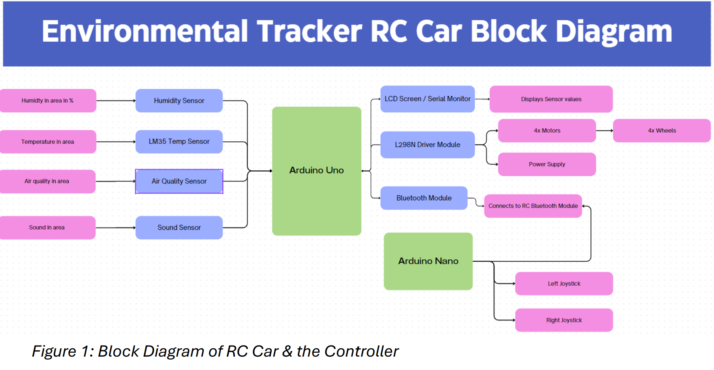
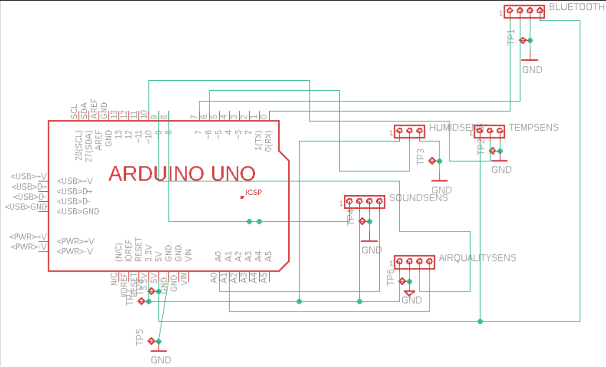
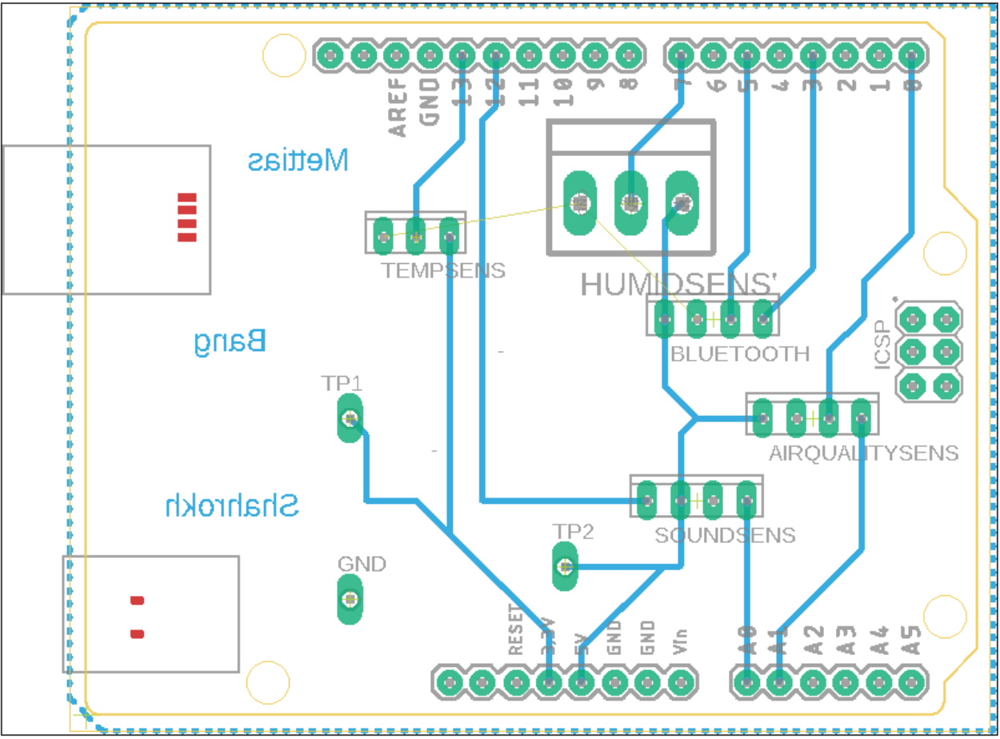
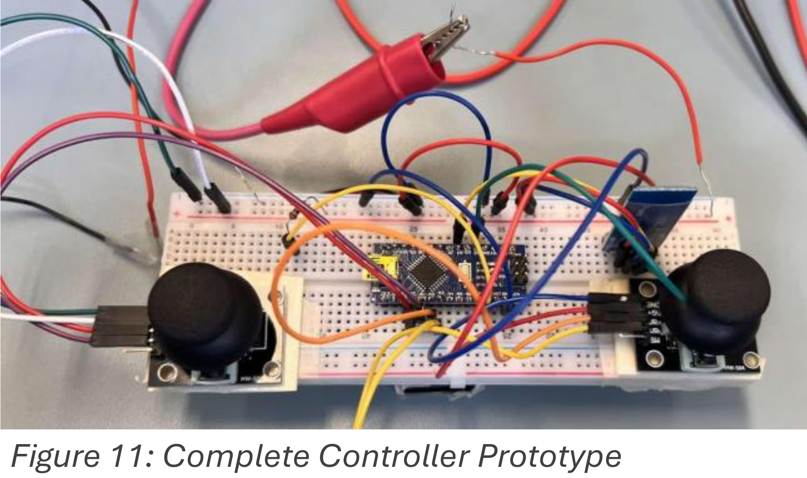

Introduction
This project details the development and deployment of a remote-controlled (RC) environmental monitoring car tailored for hard-to-reach areas, aiming to provide insights into environmental conditions where accessibility is limited. The primary objective was to design an RC vehicle equipped with sensors for data collection, emphasizing wireless communication for remote operation.
System Overview
The design of our environmental monitoring RC car revolves around several key components and subsystems, each serving a specific function in the data collection process. The block diagram below provides an overview of the major functions and layout of our selected solution:

Components and Design
Sensor Integration
Our RC car includes a range of sensors such as the DHT22 for humidity and temperature, the LM35 for accurate temperature readings, the MQ-135 for air quality, and the KY-038 for sound intensity. Each sensor is interfaced with the Arduino Uno microcontroller to provide real-time environmental monitoring.
Control and Communication
The Arduino Uno serves as the central control unit, facilitating seamless integration of sensor data and enabling wireless communication via the HC-05 Bluetooth module. The L298N motor driver module controls the speed and direction of four DC motors.
Power Supply and Propulsion
The RC car is powered by rechargeable batteries, ensuring sustainability and extended operational lifespan. Four high-traction rubber wheels driven by individual motors provide manoeuvrability and traction on various surfaces.
User Interface
An onboard LCD screen displays real-time sensor readings, allowing users to monitor environmental parameters remotely. Joysticks interface with the Arduino Nano microcontroller to provide intuitive control over the RC car's movement via Bluetooth remote control.


Implementation
The implementation phase included preparing the RC car body, integrating the driver module and power supply, setting up Bluetooth connections, coding for the controller and RC car, and assembly and testing. We encountered challenges with Bluetooth interference and motor driver overheating, but these were addressed through systematic troubleshooting and adjustments.


Future Work
Future iterations of the project may include implementing more resilient communication protocols, refining control algorithms, and expanding the sensor array for broader environmental monitoring. Exploring modular design approaches and scalability will ensure the project's longevity and adaptability.
Conclusion
The Bluetooth-controlled RC car project demonstrates the feasibility of leveraging technology to address environmental concerns in remote settings. Through interdisciplinary collaboration and innovation, the RC environmental monitoring car exemplifies a scalable solution for advancing environmental awareness and sustainability efforts in remote and underserved regions.